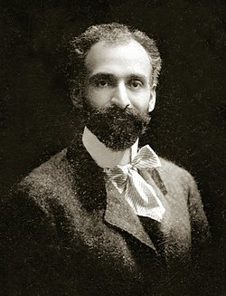
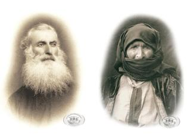
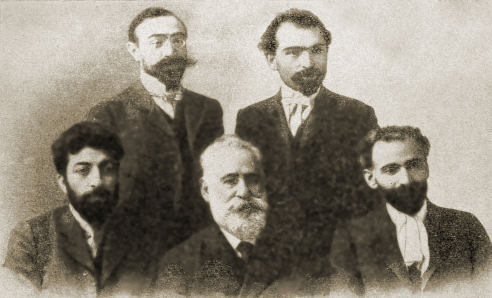
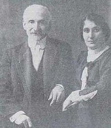
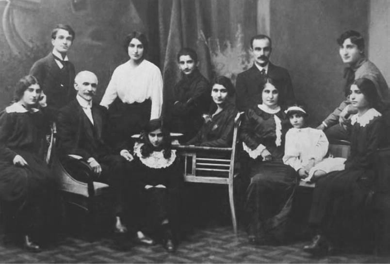

Հովհաննես Թումանյան

Հովհաննես Թումանյան
Հովհաննես Թադևոսի Թումանյան (փետրվարի 19, 1869, Դսեղ, Բորչալուի գավառ, Թիֆլիսի նահանգ, Ռուսական կայսրություն - մարտի 23, 1923, Մոսկվա, ԽՍՀՄ), հայ բանաստեղծ, արձակագիր, գրական, ազգային և հասարակական գործիչ։ Գրել է բանաստեղծություններ, պոեմներ, քառյակներ, բալլադներ, պատմվածքներ ու հեքիաթներ, ակնարկներ, քննադատական ու հրապարակախոսական հոդվածներ, կատարել է թարգմանություններ, մշակել է «Սասնա ծռեր»դյուցազնավեպի  «Սասունցի Դավիթ» ճյուղը։ Համարվում է ամենայն հայոց մեծ բանաստեղծ: Նրա գործերը մեծ մասամբ գրված են ռեալիստական ոճով, երբեմնկենտրոնանալով իր ժամանակների ամենօրյա կյանքի վրա: Ծնվելով Լոռվա Դսեղ գյուղում՝ Թումանյանը երիտասարդ տարիքում տեղափոխվեց Թիֆլիս, որը ողջ 19-րդ դարում և 20-րդ դարի սկզբներին Ռուսական կայսրությունում հայ մշակութային կյանքի կենտրոնն էր: Շուտով նա հայտնի դարձավ հայկական հասարակության լայն շրջանակներին շնորհիվ իր պարզ, բայց բացառիկ և պոետիկ ստեղծագործությունների։ Թումանյանի ստեղծագործությունների հիման վրա նկարահանվել են մի շարք ֆիլմեր: Եվս երկու՝ Անուշ (1912) և Ալմաստ (1930) օպերաները հիմնված են Թումանյանի ստեղծագործությունների վրա։
Հովհաննես Թումանյանի հայրը՝ Ասլանը (1839-1898), գյուղի քահանան էր՝ ձեռնադրված որպես Տեր-Թադևոս։  Նա պատկանում էր ազնվական Թումանյան տոհմին, որ սերում էր Տարոնից 10-11-րդ դարերում Լոռի գաղթած Մամիկոնյաններից: Մայրը՝ Սոնան (1842-1936), ծագում էր Քոչարյանների տոհմից և նույնպես դսեղցի էր։ Լինելով զրույց սիրող և լավ պատմող կին՝ նա իր երեխաներին լեգենդներ, առակներ և հեքիաթներ էր պատմում, համեմած ժողովրդական ոճով և դարձվածներով։ Թումանյանն ութ երեխաներից ամենաավագն էր. մյուս երեխաներն էին՝ Ռոստոմ (1871-1915), Օսան (1874-1926), Իսկուհի (1878-1943), Վահան (1881-1937), Աստղիկ (1885-1953), Արշավիր (1888-1921), Արտաշես (1892-1916):
Հովհաննես Թումանյանը ծնվել է 1869 թվականի փետրվարի 19-ին Լոռվա Դսեղ գյուղում: 1877-1879 թվականներին Թումանյանը սովորել է Դսեղի ծխական դպրոցում։ 1879-1883 սովորել է Ջալալօղլու (այժմ Ստեփանավան) նորաբաց երկսեռ դպրոցում: 1883 թվականից բնակվել է Թիֆլիսում: 1883-1887 թվականներին սովորել է Թիֆլիսի Ներսիսյան դպրոցում, սակայն նյութական ծանր դրության պատճառով 1887 թվականին կիսատ թողնելով ուսումը` աշխատել է Թիֆլիսի հայ եկեղեցական դատարանում, այնուհետև Հայ Հրատարակչական միության գրասենյակում (մինչև 1893 թ.)։ 1893թվականից աշխատակցել է «Աղբյուր», «Մուրճ», «Հասկեր», «Հորիզոն» գրական պարբերականներին: 1899 թվականին նրա նախաձեռնությամբ Թիֆլիսում ստեղծվել է «Վերնատուն» գրական խմբակը,  որի անդամներն էին Հովհաննես Թումանյանը, Դերենիկ Դեմիրճյանը, Լևոն Շանթը, Ղազարոս Աղայանը, Ավետիք Իսահակյանը, Նիկոլ Աղբալյանը և ուրիշներ։ Որոշ ընդմիջումներով խմբակը գործել է մինչև 1908 թ: 1912 թվականին Թումանյանն ընտրվել է նորաստեղծ Հայ գրողների կովկասյան ընկերության նախագահ, իսկ 1918թվականին՝ Հայոց հայրենակցական միությունների միության (ՀՀՄՄ) նախագահ։ Առաջին համաշխարհային պատերազմում (1914-1918 թթ.) հայ ժողովրդի կրած վնասները հաշվելու և Փարիզի հաշտության խորհրդաժողովին (1919-1920 թթ.) ներկայացնելու նպատակով ՀՀՄՄ-ն 1918 թվականին ստեղծել է Քննիչ հանձնաժողով՝ Թումանյանի գլխավորությամբ։1921 թվականի աշնանը Թումանյանը մեկնել է Կոստանդնուպոլիս՝ հայ գաղթականների համար օգնություն գտնելու նպատակով։  Մի քանի ամիս մնալով այնտեղ` նա վերադառնում է հիվանդացած։ 1922 թվականին տարած վիրահատությունից հետո Թումանյանի ինքնազգացողությունը լավանում է, սակայն սեպտեմբերին հիվանդությունը դարձյալ իրեն զգալ է տալիս։ Թումանյանին տեղափոխում են Մոսկվայի հիվանդանոցներից մեկը, սակայն 1923 թվականի մարտի 23-ին՝ 54 տարեկան հասակում Հովհաննես Թումանյանը վախճանվում է։
Թումանյանների ընտանիքը 1888 թվականին՝ տասնինը տարեկան հասակում Թումանյանն ամուսնացել է տասնյոթամյա Օլգա Մաճկալյանի հետ: Նրանք ունեցել են 10 երեխա՝

• Մուշեղ (1889-1938)
• Աշխեն (1891-1968)
• Նվարդ (1892-1957)
• Արտավազդ (1894-1918)
• Համլիկ (1896-1938)
• Անուշ (1898-1927)
• Արփենիկ (1899-1981)
• Արեգ (1900-1939)
• Սեդա (1905-1988)
• Թամար (1907-1989)
20-րդ դարի սկզբին Թումանյանը հայտնի է դառնում նաև որպես հասարակական գործիչ։ 1905-1906 թվականներին հաշտարարի դեր է կատարել ցարական կառավարության հրահրած հայ-թաթարական կռիվների ժամանակ, որի պատճառով 2 անգամ ձերբակալվել է։ 1918 թվականին հայ-վրացական պատերազմի ժամանակ խստագույնս քննադատել է 2 հավատակից ժողովուրդների թշնամությունը հրահրողներին: Թումանյանին մշտապես մտահոգել և հուզել է հայ ժողովրդի ճակատագիրը, Մեծ Եղեռնի հետևանքով Արևմտյան Հայաստանից տեղահանված հայության վիճակը։ 1916 թվականին 2 անգամ եղել է ազատագրված վայրերում. հասել է մինչև Վան, օգնել հայ գաղթականներին, հատկապես Էջմիածնում հավաքված որբ երեխաներին։ 1914 թվականին Թումանյանը միանում է Պատերազմից վնասվածներին օգնող կոմիտե-ին, որ հետագայում օգնեց մազապուրծ եղած հայ գաղթականներին Էջմիածնում հաստատվել: